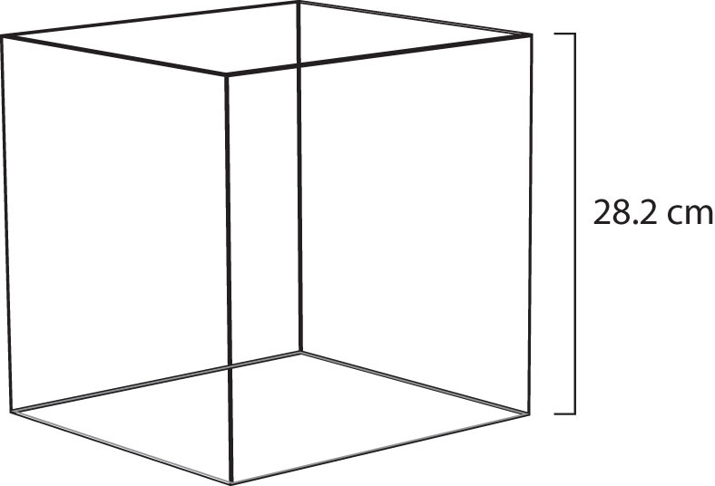

So far, the gas laws we have considered have all required that the gas change its conditions; then we predict a resulting change in one of its properties. Are there any gas laws that relate the physical properties of a gas at any given time?
Consider a further extension of the combined gas law to include n. By analogy to Avogadro’s law, n is positioned in the denominator of the fraction, opposite the volume. So
Because pressure, volume, temperature, and amount are the only four independent physical properties of a gas, the constant in the above equation is truly a constant; indeed, because we do not need to specify the identity of a gas to apply the gas laws, this constant is the same for all gases. We define this constant with the symbol R, so the previous equation is written as
which is usually rearranged as
PV = nRTThis equation is called the ideal gas lawA gas law that relates all four independent physical properties of a gas under any conditions.. It relates the four independent properties of a gas at any time. The constant R is called the ideal gas law constant. Its value depends on the units used to express pressure and volume. Table 6.1 "Values of the Ideal Gas Law Constant " lists the numerical values of R.
Table 6.1 Values of the Ideal Gas Law Constant R
| Numerical Value | Units |
|---|---|
| 0.08205 | |
| 62.36 | |
| 8.314 |
The ideal gas law is used like any other gas law, with attention paid to the unit and making sure that temperature is expressed in Kelvin. However, the ideal gas law does not require a change in the conditions of a gas sample. The ideal gas law implies that if you know any three of the physical properties of a gas, you can calculate the fourth property.
A 4.22 mol sample of Ar has a pressure of 1.21 atm and a temperature of 34°C. What is its volume?
Solution
The first step is to convert temperature to kelvins:
34 + 273 = 307 KNow we can substitute the conditions into the ideal gas law:
The atm unit is in the numerator of both sides, so it cancels. On the right side of the equation, the mol and K units appear in the numerator and the denominator, so they cancel as well. The only unit remaining is L, which is the unit of volume that we are looking for. We isolate the volume variable by dividing both sides of the equation by 1.21:
Then solving for volume, we get
V = 87.9 LTest Yourself
A 0.0997 mol sample of O2 has a pressure of 0.692 atm and a temperature of 333 K. What is its volume?
Answer
3.94 L
At a given temperature, 0.00332 g of Hg in the gas phase has a pressure of 0.00120 mmHg and a volume of 435 L. What is its temperature?
Solution
We are not given the number of moles of Hg directly, but we are given a mass. We can use the molar mass of Hg to convert to the number of moles.
Pressure is given in units of millimeters of mercury. We can either convert this to atmospheres or use the value of the ideal gas constant that includes the mmHg unit. We will take the second option. Substituting into the ideal gas law,
The mmHg, L, and mol units cancel, leaving the K unit, the unit of temperature. Isolating T all by itself on one side, we get
Then solving for K, we get
T = 1,404 KTest Yourself
For a 0.00554 mol sample of H2, P = 23.44 torr and T = 557 K. What is its volume?
Answer
8.21 L
The ideal gas law can also be used in stoichiometry problems.
What volume of H2 is produced at 299 K and 1.07 atm when 55.8 g of Zn metal react with excess HCl?
Zn(s) + 2HCl(aq) → ZnCl2(aq) + H2(g)Solution
Here we have a stoichiometry problem where we need to find the number of moles of H2 produced. Then we can use the ideal gas law, with the given temperature and pressure, to determine the volume of gas produced. First, the number of moles of H2 is calculated:
Now that we know the number of moles of gas, we can use the ideal gas law to determine the volume, given the other conditions:
All the units cancel except for L, for volume, which means
V = 19.6 LTest Yourself
What pressure of HCl is generated if 3.44 g of Cl2 are reacted in 4.55 L at 455 K?
H2(g) + Cl2(g) → 2HCl(g)Answer
0.796 atm
It should be obvious by now that some physical properties of gases depend strongly on the conditions. What we need is a set of standard conditions so that properties of gases can be properly compared to each other. Standard temperature and pressure (STP)A set of benchmark conditions used to compare other properties of gases; about 1 atm for pressure and 273 K for temperature. is defined as exactly 100 kPa of pressure (0.986 atm) and 273 K (0°C). For simplicity, we will use 1 atm as standard pressure. Defining STP allows us to compare more directly the properties of gases that differ from each other.
One property shared among gases is a molar volume. The molar volumeThe volume of exactly 1 mol of a gas; equal to 22.4 L at STP. is the volume of 1 mol of a gas. At STP, the molar volume of a gas can be easily determined by using the ideal gas law:
All the units cancel except for L, the unit of volume. So
V = 22.4 LNote that we have not specified the identity of the gas; we have specified only that the pressure is 1 atm and the temperature is 273 K. This makes for a very useful approximation: any gas at STP has a volume of 22.4 L per mole of gas; that is, the molar volume at STP is 22.4 L/mol (Figure 6.4 "Molar Volume"). This molar volume makes a useful conversion factor in stoichiometry problems if the conditions are at STP. If the conditions are not at STP, a molar volume of 22.4 L/mol is not applicable. However, if the conditions are not at STP, the combined gas law can be used to calculate what the volume of the gas would be if at STP; then the 22.4 L/mol molar volume can be used.
Figure 6.4 Molar Volume
A mole of gas at STP occupies 22.4 L, the volume of a cube that is 28.2 cm on a side.
How many moles of Ar are present in 38.7 L at STP?
Solution
We can use the molar volume, 22.4 L/mol, as a conversion factor, but we need to reverse the fraction so that the L units cancel and mol units are introduced. It is a one-step conversion:
Test Yourself
What volume does 4.87 mol of Kr have at STP?
Answer
109 L
What volume of H2 is produced at STP when 55.8 g of Zn metal react with excess HCl?
Zn(s) + 2HCl(aq) → ZnCl2(aq) + H2(g)Solution
This is a stoichiometry problem with a twist: we need to use the molar volume of a gas at STP to determine the final answer. The first part of the calculation is the same as in a previous example:
Now we can use the molar volume, 22.4 L/mol, because the gas is at STP:
Alternatively, we could have applied the molar volume as a third conversion factor in the original stoichiometry calculation.
Test Yourself
What volume of HCl is generated if 3.44 g of Cl2 are reacted at STP?
H2(g) + Cl2(g) → 2HCl(g)Answer
2.17 L
The ideal gas law can also be used to determine the densities of gases. Density, recall, is defined as the mass of a substance divided by its volume:
Assume that you have exactly 1 mol of a gas. If you know the identity of the gas, you can determine the molar mass of the substance. Using the ideal gas law, you can also determine the volume of that mole of gas, using whatever the temperature and pressure conditions are. Then you can calculate the density of the gas by using
What is the density of N2 at 25°C and 0.955 atm?
Solution
First, we must convert the temperature into kelvins:
25 + 273 = 298 KIf we assume exactly 1 mol of N2, then we know its mass: 28.0 g. Using the ideal gas law, we can calculate the volume:
All the units cancel except for L, the unit of volume. So
V = 25.6 LKnowing the molar mass and the molar volume, we can determine the density of N2 under these conditions:
Test Yourself
What is the density of CO2 at a pressure of 0.0079 atm and 227 K? (These are the approximate atmospheric conditions on Mars.)
Answer
0.019 g/L
Breathing (more properly called respiration) is the process by which we draw air into our lungs so that our bodies can take up oxygen from the air. Let us apply the gas laws to breathing.
Start by considering pressure. We draw air into our lungs because the diaphragm, a muscle underneath the lungs, moves down to reduce pressure in the lungs, causing external air to rush in to fill the lower-pressure volume. We expel air by the diaphragm pushing against the lungs, increasing pressure inside the lungs and forcing the high-pressure air out. What are the pressure changes involved? A quarter of an atmosphere? A tenth of an atmosphere? Actually, under normal conditions, it’s only 1 or 2 torr of pressure difference that makes us breathe in and out.
Figure 6.5 Breathing Mechanics

Breathing involves pressure differences between the inside of the lungs and the air outside. The pressure differences are only a few torr.
A normal breath is about 0.50 L. If room temperature is about 22°C, then the air has a temperature of about 295 K. With normal pressure being 1.0 atm, how many moles of air do we take in for every breath? The ideal gas law gives us an answer:
Solving for the number of moles, we get
n = 0.021 mol airThis ends up being about 0.6 g of air per breath—not much but enough to keep us alive.
What is the ideal gas law? What is the significance of R?
Why does R have different numerical values (see Table 6.1 "Values of the Ideal Gas Law Constant ")?
A sample of gas has a volume of 3.91 L, a temperature of 305 K, and a pressure of 2.09 atm. How many moles of gas are present?
A 3.88 mol sample of gas has a temperature of 28°C and a pressure of 885 torr. What is its volume?
A 0.0555 mol sample of Kr has a temperature of 188°C and a volume of 0.577 L. What pressure does it have?
If 1.000 mol of gas has a volume of 5.00 L and a pressure of 5.00 atm, what is its temperature?
A sample of 7.55 g of He has a volume of 5,520 mL and a temperature of 123°C. What is its pressure in torr?
A sample of 87.4 g of Cl2 has a temperature of −22°C and a pressure of 993 torr. What is its volume in milliliters?
A sample of Ne has a pressure of 0.772 atm and a volume of 18.95 L. If its temperature is 295 K, what mass is present in the sample?
A mercury lamp contains 0.0055 g of Hg vapor in a volume of 15.0 mL. If the operating temperature is 2,800 K, what is the pressure of the mercury vapor?
Oxygen is a product of the decomposition of mercury(II) oxide:
2HgO(s) → 2Hg(ℓ) + O2(g)What volume of O2 is formed from the decomposition of 3.009 g of HgO if the gas has a pressure of 744 torr and a temperature of 122°C?
Lithium oxide is used to absorb carbon dioxide:
Li2O(s) + CO2(g) → Li2CO3(s)What volume of CO2 can 6.77 g of Li2O absorb if the CO2 pressure is 3.5 × 10−4 atm and the temperature is 295 K?
What is the volume of 17.88 mol of Ar at STP?
How many moles are present in 334 L of H2 at STP?
How many liters, at STP, of CO2 are produced from 100.0 g of C8H18, the approximate formula of gasoline?
2C8H18(ℓ) + 25O2(g) → 16CO2(g) + 18H2O(ℓ)How many liters, at STP, of O2 are required to burn 3.77 g of butane from a disposable lighter?
2C4H10(g) + 13O2(g) → 8CO2(g) + 10H2O(ℓ)What is the density of each gas at STP?
What is the density of each gas at STP?
What is the density of SF6 at 335 K and 788 torr?
What is the density of He at −200°C and 33.9 torr?
The ideal gas law is PV = nRT. R is the ideal gas law constant, which relates the other four variables.
0.327 mol
3.64 atm
8,440 torr
12.2 g
0.230 L
401 L
157 L
5.51 g/L